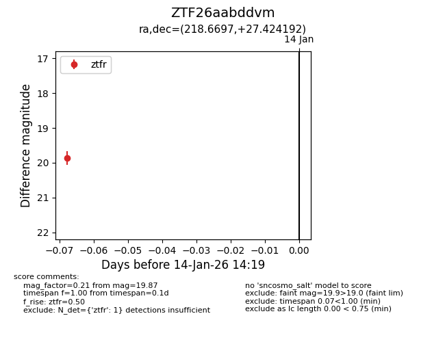
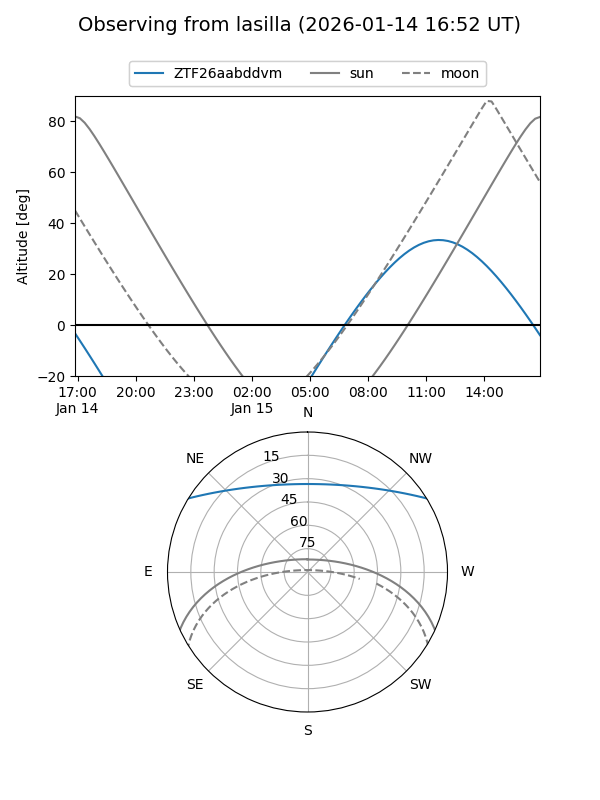
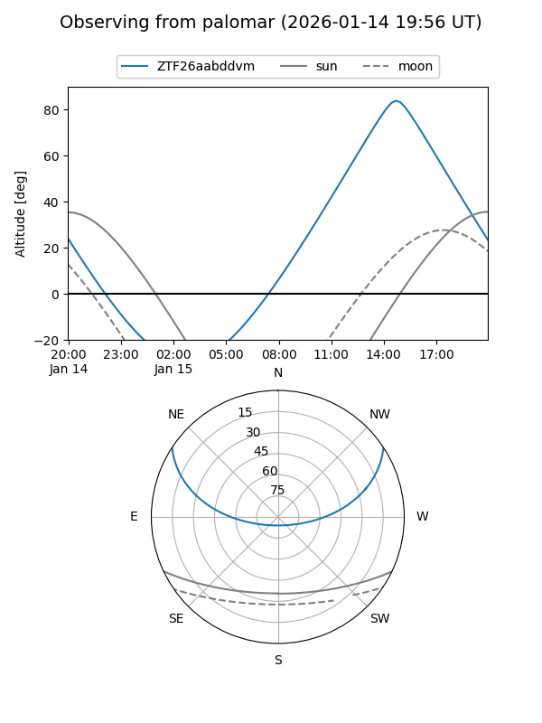

ZTF26aabddvm
Target ZTF26aabddvm at 2026-01-14 14:20
Aliases and brokers:
FINK: link
Lasair: link
ALeRCE: link
alt names
ZTF26aabddvm (ztf,fink_ztf)
Coordinates:
equatorial (ra, dec) = 218.6697,+27.42419
equatorial (HMS+DMS) = 14:34:40.73,+27:25:27.09
galactic (l, b) = (39.6528,+67.09919)
Flags:
Photometry:
last ztfr=19.87
1 ztfr detections
Lightcurve

Visibility


Additional plots